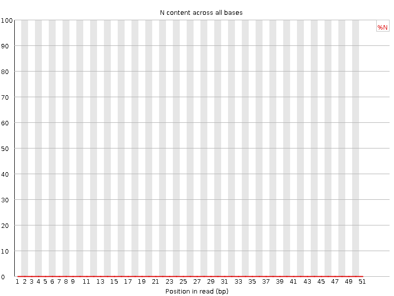

![[OK]](Icons/tick.png) Basic Statistics
Basic Statistics
| Measure | Value |
|---|---|
| Filename | Sample_5_L002.fastq |
| File type | Conventional base calls |
| Encoding | Sanger / Illumina 1.9 |
| Total Sequences | 18618769 |
| Filtered Sequences | 0 |
| Sequence length | 51 |
| %GC | 52 |
Per base sequence quality
Per sequence quality scores
![[FAIL]](Icons/error.png) Per base sequence content
Per base sequence content
Per base GC content

Per sequence GC content
Per base N content

Sequence Length Distribution
Sequence Duplication Levels
![[WARN]](Icons/warning.png) Overrepresented sequences
Overrepresented sequences
| Sequence | Count | Percentage | Possible Source |
|---|---|---|---|
| GATCGGAAGAGCACACGTCTGAACTCCAGTCACCAGATCATCTCGTATGCC | 117361 | 0.6303370539695723 | TruSeq Adapter, Index 7 (100% over 51bp) |
| ATATATATATATATATAGATCGGAAGAGCACACGTCTGAACTCCAGTCACC | 34612 | 0.18589843399421305 | Illumina Multiplexing PCR Primer 2.01 (100% over 34bp) |
| ATATATATATATATAGATCGGAAGAGCACACGTCTGAACTCCAGTCACCAG | 19652 | 0.10554940554877715 | TruSeq Adapter, Index 7 (100% over 36bp) |
Kmer Content
| Sequence | Count | Obs/Exp Overall | Obs/Exp Max | Max Obs/Exp Position |
|---|---|---|---|---|
| AAAAA | 3256255 | 5.022718 | 8.179404 | 10 |
| TTTTT | 2271175 | 3.5280468 | 4.846612 | 11 |
| TTCTT | 2568135 | 3.4536998 | 6.4313493 | 6 |
| CTTCT | 2751545 | 3.203513 | 5.483641 | 1 |
| CAGCA | 2866520 | 3.0914176 | 4.466781 | 9 |
| TCTTC | 2532575 | 2.948575 | 5.510965 | 7 |
| GAAGA | 2182145 | 2.9126325 | 11.463576 | 6 |
| CACCA | 2727925 | 2.7418265 | 8.41715 | 31 |
| ATATA | 1729200 | 2.6747973 | 9.90451 | 7 |
| TCATC | 2263290 | 2.6313424 | 9.159017 | 38 |
| TCTTG | 1935335 | 2.417693 | 5.1259885 | 7 |
| TATAT | 1511145 | 2.340801 | 9.566216 | 6 |
| ATCAT | 1734455 | 2.3259718 | 9.921185 | 37 |
| CTCCT | 2253685 | 2.2715702 | 7.361714 | 1 |
| CTCCA | 2252190 | 2.2668629 | 7.7081647 | 24 |
| TCCAG | 2036120 | 2.198967 | 8.061012 | 25 |
| AAGAG | 1575940 | 2.1034963 | 10.0929365 | 7 |
| TCCTC | 2084280 | 2.1008208 | 5.0328217 | 2 |
| TTGAA | 1450535 | 2.0872033 | 6.115952 | 7 |
| GGAAG | 1620850 | 2.0124998 | 9.448378 | 5 |
| GCCAG | 1980705 | 1.9870709 | 5.956702 | 1 |
| CATCT | 1704245 | 1.9813861 | 8.323895 | 39 |
| GGCAG | 1797210 | 1.9345839 | 5.082655 | 1 |
| ACCAG | 1757480 | 1.895366 | 8.113755 | 32 |
| GAGCA | 1627420 | 1.8832045 | 9.195999 | 9 |
| AGCAC | 1676725 | 1.8082752 | 8.785835 | 10 |
| CCAGA | 1659910 | 1.790141 | 7.813447 | 33 |
| AGAGC | 1517025 | 1.7554585 | 8.846082 | 8 |
| CTGAA | 1299875 | 1.6192774 | 8.756263 | 19 |
| GCACA | 1438700 | 1.5515755 | 7.879966 | 11 |
| GAACT | 1238670 | 1.543033 | 8.491631 | 21 |
| TCACC | 1502285 | 1.5120723 | 7.1346793 | 30 |
| CCAGT | 1393765 | 1.5052371 | 7.477763 | 26 |
| GTCCA | 1393140 | 1.5045621 | 5.3357973 | 1 |
| TGAAC | 1190770 | 1.4833632 | 8.624121 | 20 |
| ATCTC | 1271585 | 1.478368 | 7.833163 | 40 |
| GATCA | 1177620 | 1.4669821 | 8.4358635 | 36 |
| AGTCA | 1142870 | 1.4236934 | 8.387855 | 28 |
| AGATC | 1117410 | 1.3919773 | 8.282229 | 35 |
| CACAC | 1367760 | 1.37473 | 7.1680045 | 12 |
| CTCGT | 1268525 | 1.3719147 | 7.3355465 | 42 |
| TCTGA | 1090090 | 1.3598615 | 8.466679 | 18 |
| CAGTC | 1190010 | 1.2851859 | 7.414573 | 27 |
| TCTCG | 1143400 | 1.2365915 | 7.167436 | 41 |
| CAGAT | 959020 | 1.194668 | 8.212131 | 34 |
| GTCTG | 1010495 | 1.1726202 | 7.8680615 | 17 |
| AACTC | 965345 | 1.1207457 | 7.685049 | 22 |
| GTCAC | 1034350 | 1.1170764 | 7.188801 | 29 |
| ATGCC | 1021015 | 1.1026748 | 7.3992662 | 47 |
| CACGT | 976090 | 1.0541568 | 7.1542025 | 14 |
| ACTCC | 1040985 | 1.0477669 | 6.7752934 | 23 |
| TCGTA | 760660 | 0.94890535 | 7.9217386 | 43 |
| CGGAA | 742220 | 0.85887605 | 7.8575573 | 4 |
| ACACG | 793180 | 0.8554102 | 6.9882812 | 13 |
| CGTCT | 781715 | 0.84542775 | 7.074345 | 16 |
| GATCG | 676725 | 0.78419256 | 7.3445706 | 1 |
| ACGTC | 703845 | 0.7601379 | 6.928112 | 15 |
| TCGGA | 644235 | 0.74654293 | 7.909723 | 3 |
| GTATG | 540935 | 0.7240566 | 8.305317 | 45 |
| ATCGG | 623175 | 0.7221385 | 7.352892 | 2 |
| TATGC | 485820 | 0.60604894 | 7.6902137 | 46 |
| CGTAT | 354235 | 0.44189978 | 7.5387197 | 44 |